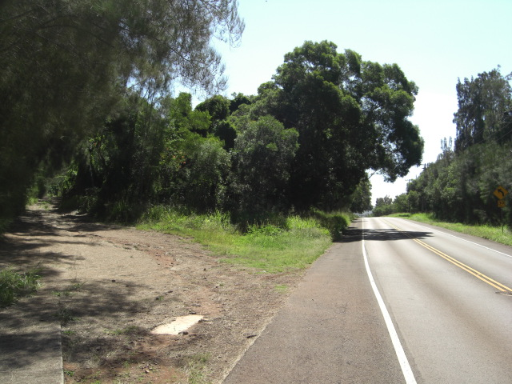

I finally did it! Kaulapapa is a state park in Molokai, located in the higher elevations. It's quite a change from the rest of the island, with pine and fir forests and much cooler temperatures. It was only about 21.5 miles (34.5km) one way, which doesn't seem like much when I write it down... Maybe I shouldn't brag about that... Anyway, Molokai essentially runs east and west, so riding west is a breeze because, well, there's a breeze: there's almost always a tailwind from the Trade Winds this time of year. (Remember the Disney cartoon Talespin? That was a good cartoon.) So the ride out was pretty easy. The trip up the mountain wasn't bad either; it was easy compared to the weekly mountain trips I made through Arashiyama in Kyoto.
Kaualpapa Point! Most people know Molokai as the place with the leper colony, and yep, it's still there, and Kaulapapa Point overlooks it. It's a truly stunning view too. One thing that alwasy bugged me about Niigata, and the south shore of Molokai where I live, is that there's always another island in the way when looking out on the ocean (Sado for Niigata, Lanai and Oahu for Molokai). Not so on the north side, and from Kaulapapa Point you just see the ocean merging into the sky on the horizon. Now THAT would get me to stay here if I had a house overlooking that.
Spent about two hours hanging out in the park up there. Really, all I want it quietude. You know how Tyrol just kinda left and went his own way on the last episode of Battlestar Galactica? All I could do was sigh... Anyway, quiet park, beautiful coniferous scenery, and then the bike ride home. That westerly tailwind was a brutal headwind, and with already excrutiating saddle soreness the extended trip back was tough. Made it, with only two jerks yelling or honking as they drove by to scare me. Ah, the aloha spirit, eh?
So, just a few photos of that attached. I don't usually take photos of myself anyway, so don't get your hopes up on seeing the a wistful, longing Viking gaze out over the sea. I hope to make it a weekly trip up there, even if it's not a weekly bike trip. In the meantime, Asclepios, heal this butt o' mine! 


Leave a comment